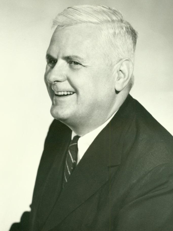

The THF Language

Overview
- Based on Church's simple type theory
- Syntactically conservative extension of TPTP FOF language
- Permits easy adaptation of existing infrastructure
- Maintains Prolog compatibility
The Layers
- Provide graduated introduction to use of THF
- THF0 - Commonly accepted constructs
- THF - Merges terms and types, more terms, more types, more connectives
- THFX - Adds useful syntactic sugar
- THFF - First-order syntax: First-order style prefix notation
- BNF
(also online at tptp.org)
THF0 Example, LCL634^1.p
Semantics
- Default for THF0 is Henkin with extensionality
- Framework for annotations for other semantics
More THF Language